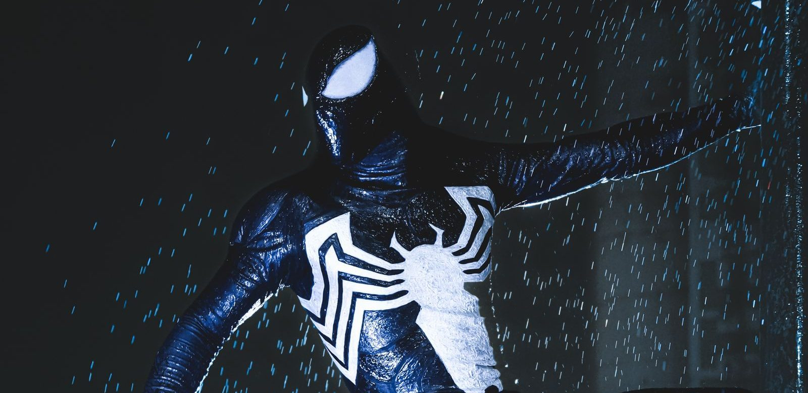

Wie is Venom?
Venom is een buitenaards wezen dat zich aan een mens vastplakt. Meestal is dat Eddie Brock. Hier lees je wie Eddie is, wat het wezen kan, waar het niet tegen kan en in welke films Venom te zien is.

In het kort
Venom is Eddie Brock samen met een buitenaards wezen dat een symbioot heet. Het wezen is een levend pak. Het plakt zich aan iemand vast, maakt die persoon sterk, en wil daarna zelf een beetje de baas spelen. Eddie is niet altijd een schurk: soms helpt hij juist mensen. Daarom noemen we hem een anti-held.
| Echte naam | Edward “Eddie” Brock Jr. |
| Wat hij doet | Was journalist. Nu soms schurk, soms held |
| Superkracht | Alle krachten van Spider-Man, want het wezen zat eerst op hem |
| Eerste keer in een strip | Als zwart pak in The Amazing Spider-Man nummer 252, 1984. Als Venom in nummer 300, 1988 |
| Bedacht door | David Michelinie en Todd McFarlane |
| Gespeeld door | Topher Grace (2007) en Tom Hardy (vanaf 2018) |
| Hoort bij | De wereld van Spider-Man |
Hoe Venom is ontstaan
Het begint in 1984 met een zwart pak. Spider-Man draagt het en merkt dat hij er sterker van wordt. Dan blijkt het geen pak te zijn maar een levend wezen, een symbioot, dat hem niet meer los wil laten. Peter Parker krijgt het er met veel moeite af.
Het wezen zoekt daarna een nieuwe drager en vindt Eddie Brock, een journalist die zijn baan bij de krant kwijtraakte omdat hij de verkeerde man had aangewezen in een grote zaak. Eddie geeft Spider-Man daar de schuld van. Samen met het wezen wordt hij in 1988 Venom, en die twee hebben allebei dezelfde vijand.
Wat Venom kan
- Alles wat Spider-Man kan. Klimmen, heel sterk zijn en snel reageren. Dat komt doordat het wezen die krachten van Peter Parker heeft overgenomen.
- Webben schieten zonder apparaatjes. De webben komen uit het wezen zelf, niet uit web-shooters om zijn polsen.
- Van vorm veranderen. Het pak kan armen en tentakels maken, groter worden of eruitzien als gewone kleren.
- Zich verstoppen. Het wezen kan van kleur veranderen en zo bijna onzichtbaar worden.
- Onder de radar blijven. Het spinnenzintuig van Spider-Man, dat hem waarschuwt bij gevaar, slaat bij Venom niet aan.
- Zichzelf verdedigen. Het pak reageert soms uit zichzelf, ook als Eddie het gevaar nog niet gezien heeft.
- Waar hij niet tegen kan: vuur en herrie. Dit zijn zijn twee zwakke plekken. Bij hard geluid en bij vuur laat het wezen los.
Wie er om hem heen staan
- Eddie Brock, de man in het pak. Zonder een mens erin kan het wezen niet veel.
- Peter Parker, oftewel Spider-Man. Hij was de allereerste drager, in 1984.
- Anne Weying, de ex-vrouw van Eddie. Toen zij het pak een keer droeg, heette ze She-Venom.
- Flash Thompson, een oude klasgenoot van Peter Parker. Hij droeg het wezen van 2011 tot 2016 en heette toen Agent Venom.
- Mac Gargan, eerder bekend als de schurk Scorpion. Hij was Venom van 2005 tot 2009.
- Dylan Brock, de zoon van Eddie. Hij nam het wezen over in 2021.
Zijn tegenstanders
- Spider-Man. De vijand van het eerste uur. Eddie geeft hem de schuld van alles wat er mis ging in zijn leven.
- Carnage. Het rode symbioot dat uit dat van Venom is voortgekomen, met de misdadiger Cletus Kasady erin. Zelfs Venom vindt Carnage te ver gaan.
- Riot. Een van de andere symbioten uit dezelfde familie, en een stuk brutaler dan Venom.
- Scream. Ook familie, te herkennen aan de slierten die op haren lijken.
- De rest van de symbiotenfamilie: Agony, Phage, Lasher, Mania en Sleeper. Ze komen allemaal uit dezelfde tak en zijn niet allemaal even aardig.
In welke films zit hij?
- Spider-Man 3 (2007), met Topher Grace als Eddie Brock. Bijrol: de film gaat over Spider-Man, en Venom komt er pas laat in.
- Venom (2018), met Tom Hardy. Hoofdrol, en de eerste film die helemaal over Venom gaat.
- Venom: Let There Be Carnage (2021), met Tom Hardy. Hoofdrol, met Carnage als tegenstander.
- Spider-Man: No Way Home (2021). Heel kort, in een scène na de aftiteling.
- Venom: The Last Dance (2024), met Tom Hardy. Hoofdrol.
Op televisie zit hij er al veel langer in. Venom komt voor in de tekenfilmseries Spider-Man: The Animated Series, Spider-Man Unlimited (1999), The Spectacular Spider-Man en Ultimate Spider-Man (2012).
👪 Tip voor ouders
Venom ziet er expres eng uit: groot, zwart en een mond vol tanden. Jonge kinderen vinden hem vaak stoer op een plaatje en toch schrikken van de films, want die zijn donkerder dan de tekenfilms waarin hij ook voorkomt. Kijk voor het actuele leeftijdsadvies per film op Kijkwijzer.
💡 Wist je dat?
Het zwarte pak was er vier jaar eerder dan Venom. Van 1984 tot 1988 was het gewoon een nieuw pak van Spider-Man, en pas daarna kreeg het een eigen naam en een eigen drager. Het idee voor dat zwarte pak kwam van Randy Schueller.
Meer lezen? Bekijk de grootste schurken van Spider-Man, lees de krachten van Spider-Man, of bekijk de hele Spider-Man pagina.
Venom speelgoed
Vind je Venom stoer? Dit is leuk Venom speelgoed, met de actuele prijs bij bol:
Veelgestelde vragen
Wie is Venom in het echt?
Venom is Eddie Brock, een journalist die zijn baan kwijtraakte, samen met een buitenaards wezen dat een symbioot heet. Het wezen is een levend pak dat zich aan hem vastplakt. Samen zijn zij Venom.
Is Venom slecht of goed?
Allebei een beetje. Venom begon in 1988 als vijand van Spider-Man, maar hij doet ook goede dingen en beschermt mensen. Daarom noemen we hem een anti-held en geen gewone schurk.
Waar is Venom bang voor?
Voor vuur en voor harde geluiden. Dat zijn de twee zwakke plekken van het symbioot: bij veel herrie of bij vuur laat het los van zijn drager.
In welke films zit Venom?
In vijf films: Spider-Man 3 (2007) met Topher Grace als Eddie Brock, Venom (2018), Venom: Let There Be Carnage (2021) en Venom: The Last Dance (2024), alle drie met Tom Hardy, en heel kort in een scène na de aftiteling van Spider-Man: No Way Home (2021).
Wie heeft Venom bedacht?
Venom is bedacht door David Michelinie en Todd McFarlane en verscheen voor het eerst in The Amazing Spider-Man nummer 300 uit 1988. Het zwarte pak zelf was al eerder te zien, in nummer 252 uit 1984.
Namen, jaartallen en filmgegevens gecontroleerd op 30 augustus 2026 bij Wikipedia.